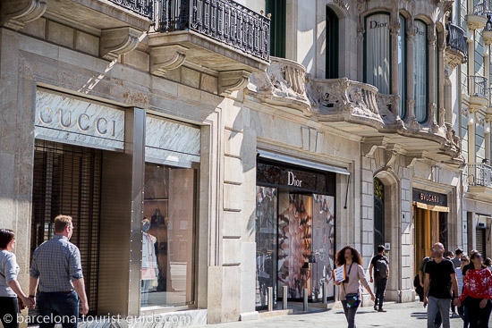
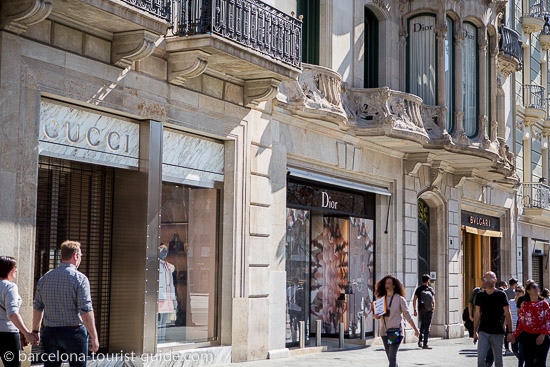

스페인에서 빼먹어서는 안되는 쇼핑 장소!
스페인을 여행하는 중에나 끝날 무렵이 되면 "스페인 와인이나 기념품 좀 사고 싶은데..어디 괜찮은 가게 없나"라는 생각이 드는 순간이 있을 거예요.
여행으로 경험하며 사고 싶은 물품들이 쏟아져 나오는 나라.
화려한 도시에 펼져져 있는 쇼핑가들과 건축물들을 함께 보며 행복을 느낄 수 있는 곳이죠.
자, 그럼 지금부터 쇼핑을 하러 스페인의 유명한 거리들로 떠나볼까요?
첫 번째로 소개할 쇼핑가는… 바르셀로나의 우아한 거리, 파세이그 데 그라시아!
 

거리를 걷는 순간부터 좌우로 늘어선 아름다운 건물들이 눈길을 사로잡아.
가우디의 건축물들이 곳곳에서 고개를 내밀고 있어
쇼핑을 하면서도 예술 작품 속을 걷는 느낌을 줍니다.
- “하이엔드 브랜드부터 스페인 로컬 디자이너 숍까지"
- "자라, 망고, H&M과 같은 하이 스트리트 매장은 모두 그라시아 거리를 따라 대형 아울렛을 운영"
- "남성복과 여성복을 모두 저렴한 가격에 판매"
“조금만 둘러봐야지” 하고 들어왔다가
나도 모르게 쇼핑백을 한가득 들고 나오게 되는 곳이며,
거리 전체가 세련된 분위기로 빛나는 장소예요.
두 번째로 소개할 쇼핑가… 무엇이든 다 있는 국민 백화점, 엘 코르테 잉글레스!🏞️
말 그대로 백화점, 들어서는 순간 정말 뭐든지 다 있는 느낌을 받을 수 있어요.
품질도 좋고 가격도 가성비라
“이건 선물로 사야겠다” 하면서 계속 담게 될겁니다.
- “스토어에서 음악, 영화, 포터블 및 가전기기, 가구, 하드웨어, 책, 의상, 식용품, 자동차, 부동산 등을 판매”
- "향수, 화장품, 의류, 식재료, 와인 등 스페인 브랜드를 가장 합리적으로 살 수 있는 장소" \
- "식품 코너에서 파는 품질 좋은 하몽이나 피쿠알, 아르베키나 등 다양한 품종으로 만든 스페인 올리브유"
D.O. 표시가 붙은 고품질 와인부터,
바르셀로나가 있는 카탈루냐 지역에서 대부분 생산된다는 특산품 까바,
뚜론 및 스페인 전통 과자 엠피뇨나다스까지
쇼핑하다가 시간 가는 줄 모르는 곳이에요.
마지막으로 소개할 쇼핑가… 세비야의 플라멩코 부티크 거리!

가게 안에 들어서는 순간, 강렬한 붉은색 드레스들과 화려한 액세서리들이 눈을 사로잡아요.
전통 장식들이 섬세하게 놓여 있고, 색감만 봐도 스페인의 열정이 고스란히 느껴져요.
- “플라멩코는 스페인 남부의 안달루시아 지방에서 발달한 집시 문화로부터 전하여 오는 민속 음악과 춤”
- “플라멩코 의상(드레스, 신발, 액세서리 등)을 전문으로 하는 부티크와 상점들”
- "강렬한 붉은색 플라멩코 드레스들과 화려한 액세서리들"
머리 장식, 귀걸이, 스카프 같은 작은 소품만 사더라도
여행 감성이 확 살아나죠.
“이건 꼭 하나 챙겨가야 해!” 하는 마음이 자연스럽게 생기는 곳이예요.
유명한 매장들과 스페인 로컬 숍이 줄지어 있는 '파세이그 데 그라시아'부터,
품질 좋은 올리브유부터 와인, 초콜릿, 전통 과자 등 없는 것이 없는 백화점 '엘 코르테 잉글레스',
플라멩코를 감상하며, 붉은색 드레스들을 구입할 수 있는 '플라멩코 부티르 거리'까지.
이 세 곳에서 필요한 물품들과 기념품들을 모두 구비하실 수 있을 거예요